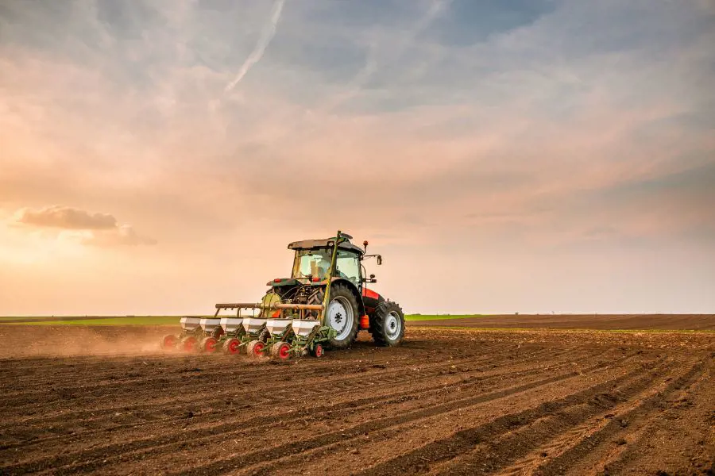
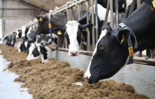

Waar komt ons voedsel vandaan?
Voordat voedsel op ons bord belandt, is het eerst geproduceerd door een boer of tuinder. Ook in de regio Land van Cuijk, Gennep en Bergen zijn veel agrarische bedrijven actief. Maar wat wordt er allemaal in deze regio geproduceerd en waar gebeurt dat?

Akkerbouw
Zij verbouwen gewassen op akkers, zoals aardappelen, granen en andere landbouwgewassen.

Veehouders
Zij houden dieren voor de productie van melk, vlees en eieren.

Tuinders
Zij telen groenten, fruit en andere gewassen. In kassen of op het land.
🥗 Gezond voedsel:
Voedsel dat binnen een gezond voedingspatroon past, zoals de schijf van vijf, met veel groenten en fruit, volkorenproducten en eiwitbronnen.
📍 Lokaal voedsel:
Voedsel dat in eigen regio wordt geproduceerd. In dit geval de gemeenten Land van Cuijk, Gennep en Bergen.
🌱 Biologisch voedsel:
Voedsel dat wordt geproduceerd volgens de Europese biologische richtlijnen. Deze zorgen ervoor dat de voedselproductie goed is voor dieren, mensen, milieu en biodiversiteit. Hiervoor geldt een officiële certificering.
Regionale voedselproducenten in beeld
Op een kaart is inzichtelijk gemaakt uit welke typen landbouwgrond de regio Land van Cuijk, Gennep en Bergen bestaat. Daarnaast is ook de verdeling van de landbouwgrond in hectare zichtbaar.
Helaas is niet alle informatie openbaar beschikbaar. Zo weten we niet altijd hoeveel voedsel een bedrijf produceert en hoeveel daarvan beschikbaar is voor de verkoop.
Ook is is er geen informatie beschikbaar over welke landbouwgronden daadwerkelijk biologisch voedsel produceren. Dit is afhankelijk van het landbouwbedrijf.